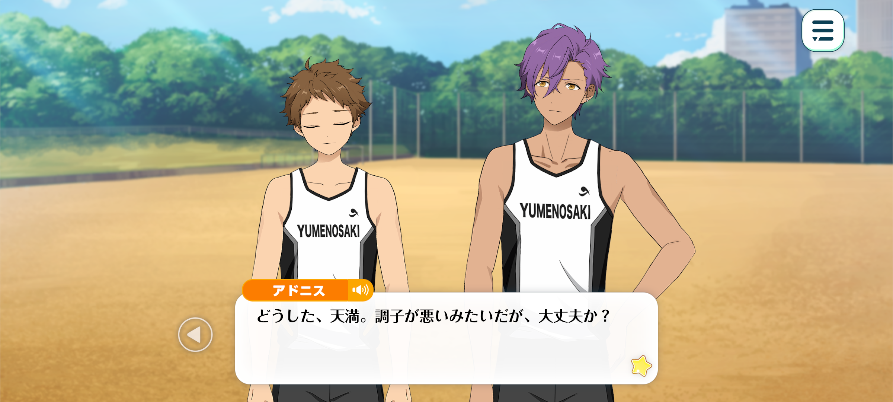
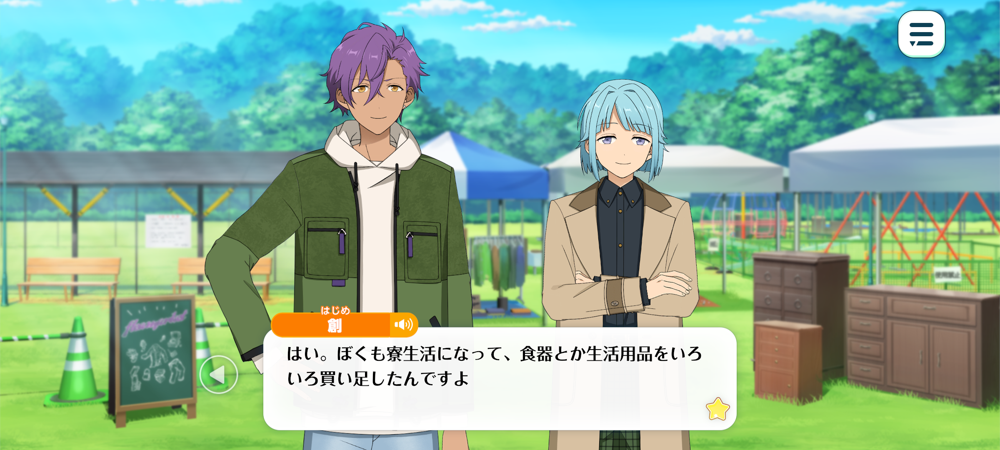
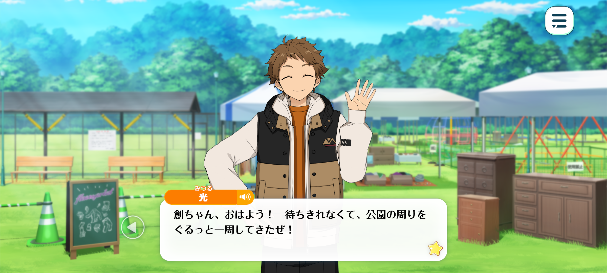

Scout! Dolly Night
Memories Of A Doll – Chapter 2


Time: The same day, after school

Mitsuru: Dashu daashu dadadaaashuuu~...♪
...
Hmm... Something feels a little off~
Adonis: Is something the matter, Tenma? You seem a little distracted. Are you alright?
Mitsuru: Ah! Adochan-senpai! You came too?
Nn~. It's nothing, really.
Look, look! I got new shoes! Aren't they sparkly and cool? ♪
My old ones got too small, so I had to get a new pair. But I haven't broken them in yet, so they still feel kinda weird.
Adonis: I see. So that's why you haven't been as energetic as usual.
Still, the more you wear them, the more comfortable they'll become. You'll just have to give them some time.
Mitsuru: Yep! They're my new buddies, after all, so I gotta spend some time getting to know 'em! ♪
Speakin' of which, what do you usually do with your old shoes, Adochan-senpai? Mine are still in pretty good shape, so I was wondering what I should do with 'em.
I used to just throw my old ones away, but Hajime-chan always tells me, "It's such a waste to throw them out when someone else could still use them!" So, wanna buy mine?
Adonis: Fumu. That does sound like something Shino would say.
Actually, I spoke with Shino in the library at lunchtime, too. He seems to have quite a fondness for the things he owns.
It seems he's more inclined to give things away rather than throw them out.
Why don't you try selling your old shoes at a flea market, Tenma?
Mitsuru: A bug market? What's that?
Adonis: Fufu. I wasn't sure what it was either until recently.
I'm not particularly familiar with flea markets in Japan myself, but as I understand it, they're places where people can sell things they no longer need.
Shino and I were planning to visit one this weekend. If you'd like, you could come along too, Tenma.
Since you're in the same unit, I'm sure you'll have plenty to talk about.
Mitsuru: Uwaaa! That sounds super interesting! I'm comin' too!
Maybe someone'll buy my shoes... Or maybe I'll find an amazing bargain! Ooooh, I can't wait!
Adonis: Indeed. Let's have Shino teach us more about the importance of taking good care of our belongings.
I'll get in touch with him, then. My apologies for interrupting your training, Tenma.
Mitsuru: Nah, I was happy to chat with you, Adochan-senpai!
Alrighty! When I get home, I'll have a look around for some more stuff to bring to the market!
Until then, back to practising! Nyooom~!
Adonis: He's as energetic as ever. I should follow Tenma's example and get plenty of running done myself.
Still... A flea market…
Perhaps I should bring a few things to sell, too. I'm sure he'd be pleased. He's been sitting around gathering dust ever since I came to Japan, after all.
Time: A few days later, on the day of the flea market

Adonis: …So this is Shino's stall. There are so many lovely things here.
Hajime: Mhm. When I first moved into the dorms, I bought quite a lot of tableware and household items.
But it seemed that Hasumi-senpai and Hidaka-senpai were thinking the exact same thing as me…
We ended up with quite a few duplicates, so I thought I'd bring some of them here to sell.
I also receive lots of novelty goods and stationery from clients, so I suppose this stall is filled with little pieces of my life, too.
Adonis: Ah, I see. RhyLin is a well-established agency, after all, so I imagine you receive quite a lot of promotional goods from various companies.
Hajime: Fufu. It would be a shame to let all those gifts go to waste, wouldn't it? I do use them from time to time, and I'm always grateful to receive them.
And now my siblings will be happy, too. Sometimes I do wonder whether I really ought to be receiving so many things…
Oh! The market's about to open. We're nearly ready, so we just need to put the finishing touches to our stall.
Adonis: Yes. All that's left is to set out the things Tenma and I brought.
…Though Tenma is running late. It's already past the time we agreed to meet.
Hajime: That's strange. Mitsuru-kun isn't usually late. Perhaps he got the meeting place mixed up?
I'll send him a message on HoldHands. Tap, tap… Oh?

Mitsuru: Morning, Hajime-chan! I couldn't wait, so I went off and explored the whole park!
The market hasn't even opened yet, so I made it back just in time…♪
Hajime: Ah, I see! I'm glad you made it, Mitsuru-kun.
Otogari-senpai has already started setting out his things. Could you put yours out, too?
Mitsuru: Can do! First up, these shoes I don't use anymore!
Anddd I've brought some clothes that don't fit me now, too! ♪ This is so exciting!
They're all still perfectly wearable, so I hope someone will give them a new home~
Hajime: You've brought some lovely things, Mitsuru-kun. I hope someone finds something they like among your favourites and gives them a new home, too! ♪
What about you, Otogari-senpai? Is there anything you'd like to sell?
Adonis: I have this doll. I've had him for quite some time, but I thought I'd put him up for sale in the hope that he might find a new owner.
Hajime: Oh, really? What a handsome doll! Since you've had him for so long, is he from your hometown?
Adonis: Yes. He's dressed in the style of a young man from my country, wearing clothes that were popular at the time.
Perhaps because he was made overseas, his appearance is rather unfamiliar to you and Tenma.
Hajime: Wow… He's so cool! His clothes are a little worn, and he does look rather old, but he's so beautifully detailed that I hardly notice!
But… are you sure you want to sell him? You went to the trouble of bringing him all the way to Japan, so he must mean a lot to you…
Adonis: There's no need to worry. I've given it some thought, and I believe it's time for us to part ways.
Hajime: Alright, then. I'll make sure to take good care of both your precious belongings, and display them nicely.
I hope someone comes along and finds something they like! Let's make the most of the flea market and enjoy ourselves…♪